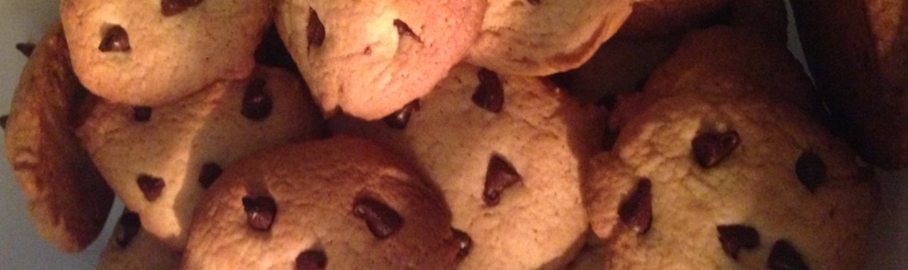
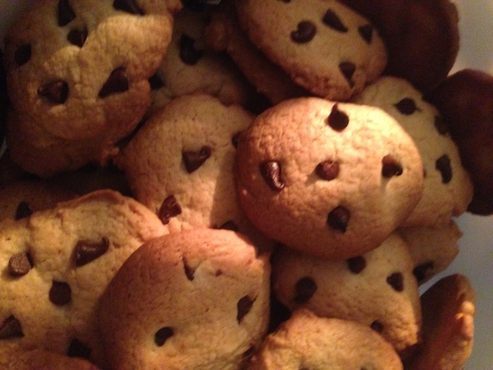
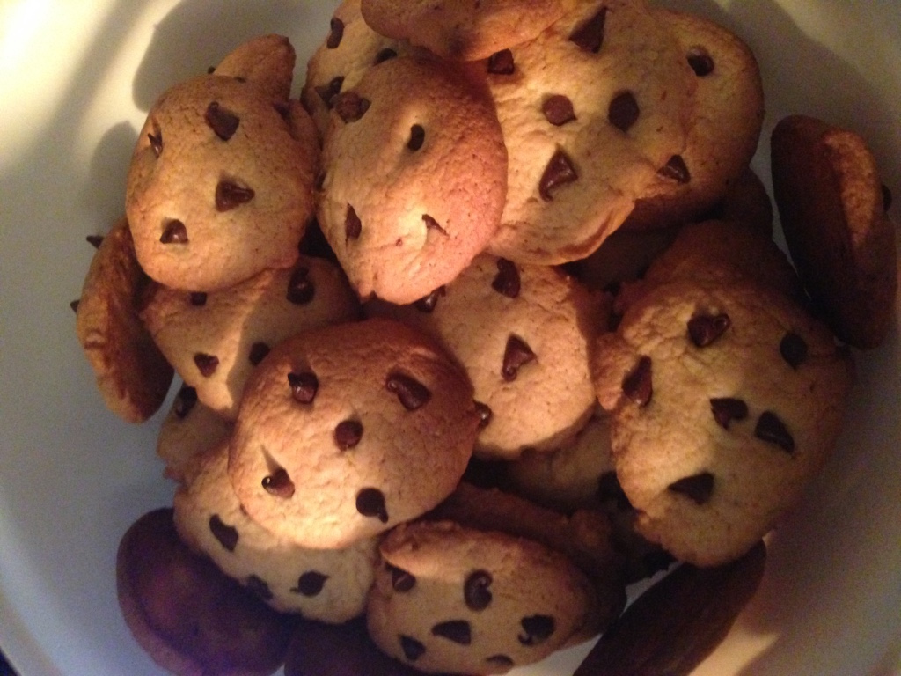

LES COOKIES : Gluten free
Octobre 2015

Les ingrédients :
- 200g de farine d'épeautre
- 100g de beurre
- 50g de sucre blanc
- 50g de vergeoise blonde
- 1 oeuf
- 1 cuillère à café de levure bio et sans gluten
- Pepite de chocolat noir
La recette :
- Pré-chauffer le four à 200°C.
- Dans un saladier, blanchir les oeufs avec les sucres, puis y intégrer le beurre fondu.
- Ajouter la farine et la levure, bien mélanger la préparation afin d'obtenir une pâte qui se travaille à la main.
- TIPS : Ajouter un peu de farine si besoin
- Sur une plaque recouverte de papier cuisson, former de petites boules et les aplatir légérement.
La cuisson :
- Baisser votre four à 180°C, et laisser cuire vos cookies pendant 8 min.
- TIPS : Il faut que le cookie soit légérement doré, et encore moelleux. Sortir les cookies et les déposer sur une grille ; les laisser refroidir.
Résultats :

